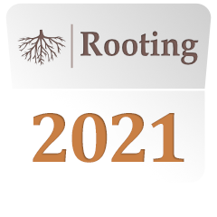

Rooting 2021
9th International Symposium on Root Development
University of Nottingham
24th to 28th May 2021
Welcome!
Due to the ongoing coronavirus global pandemic Rooting 2020 has been postponed, we are now Rooting 2021!
More information will be shared in the coming weeks and months, as it is confirmed, both here and on the Rooting 2021 twitter feed.Provisional Session Themes and provisionally invited speakers include
- Plenary Seminar - Amelia Henry (IRRI, Philippines) - Trends in Plant Science Lecture
- Hormones and root system architecture - Karin Ljung (SLU Umea) - Frontiers in Plant Science Lecture
- Root morphogenesis - Bert De Rybel (VIB Ghent) - EMBO Young Investigator Lecture
- Water and nutrient relations - Anna Amtmann (Glasgow)
- Food roots - TBA
- Root stress biology - Melissa Mitchum (US)
- Root ecosystem services/perennial root systems - Tim Crews (US)
- Root biotic interactions - Gabriel Castrillo (Nottingham) - The Plant Journal Keynote Lecture
- Responses to abiotic constraints - Christa Testerink (Netherlands)
- Modelling of root and rhizosphere processes - Andrea Schnepf (Germany)
- Technologies to image root functions - Steven Siciliano (Canada)
- Root-microbe interactions - Yang Bai (China)
- Root & root system development - Phancita Vejchasarn (Thailand)
- Root-soil interface - Colleen Iverson (US)
- Underground communication - Ulrike Mathesius (Australia)
- Root phenotyping approaches spanning lab to field - Chris Topp (US)
- Grafted root systems and intra-plant communication - Charles Melnyk (SLU Uppsala) - Frontiers in Plant Science Lecture
- ISRR11 Plenarys - Tiina Roose (UK), Jonathan Lynch (US), Joseph Dubrovsky (Mexico), Xavier Draye (Belgium), Ross Sozzani (US), Caroline Gutjahr (Germany), Malcolm Bennett (UK) & Steve Tyerman (Australia)
- Root Phenomics - ‘Hands on’ demonstrations
Thanks to generous support from our sponsors we will be offering a range of bursaries to help both students and early career researchers attend the Symposium and present their work.
We look forward to welcoming you to the 9th International Symposium on Root Development at Nottingham and the 11th Symposium of the International Society of Root Research in Missouri in May 2021.
Very best wishes on behalf of the local and international organising committees.
Stay safe,
Malcolm Bennett